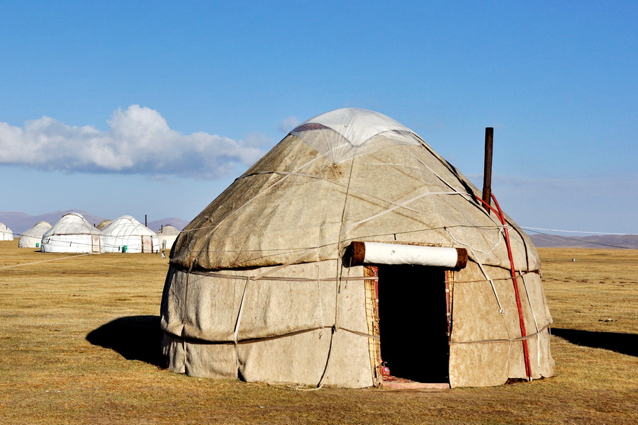

Юрта: Традиционное жилище кочевников
Строение юрты
Каркас
- Кереге: Решётчатые складные стенки, изготовленные из деревянных реек, которые могут быть закреплены тесьмой из сыромятной кожи.
- Уук: Жерди, составляющие купол юрты.
- Тундук: Круг на вершине купола, скрепляющий жерди и служащий как потолочное окно и дымоход.
- Ергенек: Дверца входа в юрту.
Покрытие
Традиционно покрытие юрты изготавливается из войлока, сделанного из овечьей шерсти. Войлок обладает отличными теплоизоляционными свойствами, что делает юрту пригодной для круглогодичного проживания.
Интерьер юрты
Изнутри юрта делится на две половины: на мужскую (ближе к двери) и на женскую. На мужской части находится постель хозяев, развешивается оружие мужчины, конская упряжь, талисманы. На женской (девичьей) хранится постель невесты (дочери хозяина). К двери находится посудный шкаф, ступа для взбивания кумыса — символ достатка.